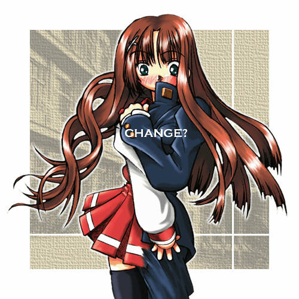

「うりゃあっ」
ドォン！
かけ声と共に柔道場に大きな音が響くと
「一本！！」
審判役の先輩の手が上がった。
「くっそう…また負けたか…」
一瞬の隙をつかれ投げ飛ばされ俺は天井を眺めながらそう呟いた。
「大丈夫ですか？」
さっきまで組み合っていたヤツが心配そうな顔をして俺を覗き込む。
俺は返事をせずに起きあがり、乱れた柔道着を直すと、
「また負けたな…」
とヤツに言う、
ヤツはすまなそうな顔をした後、頭を下げた。
「よっ、これで対西沢戦３連敗…、
今度の大会は大丈夫なんだろうなぁ」
戻ってきた俺に他の連中が次々と言ってくるが、
俺はヤツの姿をじっと眺めていた。
俺の名前は河野正之。
そして、奴の名は西沢智文。
さて、俺のプロフィールだけど、
学校はまぁそこら辺にある県立高校の２年生。
部活はご覧の通り柔道部に所属している。
俺と柔道とのつきあいは中学の時に体育の授業で始めたのがきっかけなのだが、
とは言ってもよく話しに聞く”目指せオリンピック・金メダル！！”
と言う程の柔道一直線ではなく、
まぁそれなりに、
でも、真剣に柔道を続けてきた。
そのせいもあって、
この間の個人戦では県内で比較的上位の成績を残すことが出来たのだが…
でも最近、そんな俺に強敵が現れた。
と言うのも、
約ひと月程前に西沢智文とか言うヤツがこの柔道部に入部してきたんだが、
コイツ、白帯のくせにやたらと強い。
聞けば”柔道を始めたのは入部したときが初めて”と言う
ズブのドシロウトのハズなのに、
稽古をつけてやると意外と強くって白帯なのが不思議なくらいだった。
無論、俺も黒帯の意地もあってヤツと勝負をするのだが、
どうも思うように勝てない。
現在、俺と勝負して唯一負け越しているヤツはこの西沢だけだ。
しかし、ヤツの存在は俺にとってはプラスに働いているらしく、
西沢が入部してからの俺は徐々に強くなっていた。
そう言えばこの西沢で妙なことが２つある…
以前、
「俺と相沢先輩・轟先輩・唐沢先輩とお前で団体戦を闘えば、
全国大会に出られるんじゃないか」
と半分冗談・半分本気でヤツに持ちかけると、
どういうワケかたやら嫌がって、
冗談でも”出ようか”という言葉が出てこなかった
俺だったら大喜びしてそう言うが、なんだがよーかわらん。
そして二つ目は…着替えだ。
男のクセして着替えが恥ずかしいのか、
アイツ、更衣室の隅でそそくさと着替えると、
気づいたときには居なくなっている。
別に虐める言うつもりはそうそうないし、
それに俺は柔道の結果をどうのこうの言うつもりはさらさらない。
ただ、アイツと色々喋って見たいと思うのだが、
部活が終わると同時にアイツの姿はまるで消えるかのごとく居なくなっている。
「じゃ失礼します…」
部活が終わり、更衣室で着替えていると、
案の定、先に着替え終わったアイツが先に出ようとしていた。
「おい、西沢っ、ちょっと待てよ」
俺は着替え終わってそそくさと出ていく西沢の腕をつかむと、
「たまには、俺達とつきあえよ」
そうヤツに言うが、
「えっでも」
っと困惑した顔をしたので、
「なに？、何か用事でもあるのか？」
と聞いてみると、
「いっいや…」
ヤツはそう言って俺から視線を逸らした。
「なんだ？」
俺はそんなんヤツの態度を不満に思ったが、
「じゃぁ、みんなでラーメン食いに行こうぜ」
と着替え中の他の連中に提案すると、
「おぅ、賛成」
「行こうぜ…」
っとたちまち先輩など数人が俺の提案に同意してきた。
「西沢っ、当然お前も行くだろう」
「はっはぁ」
西沢は妙に困った顔をしながら、半ば連行されるように、
そのまま俺達と一緒にラーメン屋へと向かった。
………
「ふぅ、旨かった…」
大盛りのタンメン＋チャーハンのセットを食べた後、
店の外に出るといつの間にか西沢の姿が居なくなっていた。
「あれ？西沢は？」
見えなくなったヤツの姿を探して俺が尋ねると、
「あれ？先まで居なかったか？」
「くっそう、また逃げられたか…」
いきなり姿を消した西沢に俺はちょっとムッとしていると、
ドン
「きゃっ」
「あっ」
ヤツに気を取られていた俺は出会い頭に女の子とぶつかってしまった。
「すみません」
咄嗟に謝りながら手を差し出すと、
「あれ…西部…さん……」
目の前で尻餅をついているセーラー服姿の少女が、
自分と同じクラスの娘であることに気づいた。
そして、ひと月ほど前に彼女から俺に告白を受けたコトを同時に思い出した。
柔道部でのしきたりで女性とのつきあいが出来ない俺は彼女にからの告白に、
「試合に打ち込みたいから、付き合えない」
と言って断ったのだが、
しかし俺の本音は”ＯＫ”だったのだ。
「くっそう…先輩の目さえなければ…」
悔し涙ですごしたあの日の晩のコトを思い出すと今でもズキっと来る。
「悪いな、よそ見をしていたモノだから」
僕がそう言って彼女に手を差し出すと、
「いっいえ…では…」
彼女はそう言って立ち上がると、
そそくさとその場から立ち去っていった。
「やっぱ、気まずいのかなぁ…」
素っ気ない態度に一抹の罪悪感を感じながら、
彼女の後ろ姿を見送っていると、
ふと、
「あれ、西沢さんもラーメン食べたのかな…」
っと彼女からほのかに香ってきたラーメン屋の香りに、
あの店には彼女の姿が無かったことを思い出していた。
「おぉぃ、河野っ、不祥事は起こすなよ」
と先輩達が俺をからかう、
「先輩〜っ」
そんなことを言わないでください…
と言う気持ちで返事をすると、
「あはははは…」
と笑い声が聞こえた。
数日後、県大会のメンバーが発表された。
俺は２年生でありながらも無事メンバーに選ばれたが、
気になる西沢は入部したばかりを理由に出場を堅く固辞した結果
メンバーからは外されていた。
そして、それからは県大会を目標に稽古は激しさを増していった。
そんなある日、
ドッ
「痛てっ」
乱取りの最中、西沢が声を上げた。
「どうした？」
みんなが駆け寄る。
俺も駆けつけると、
ヤツは左肩を押さえて痛みをこらえていた。
「捻ったのか？」
先輩の問いかけに西沢は無言で頷くと、
「おい…あぁそうだ、
河野っ、ちょっと、お前、西沢を看てやれ」
と先輩が俺に言う、
「判りました…」
俺はそう返事をすると、
ヤツの側に行くと、
「ちょっと痛いがガマンしろ」
と言って、西沢の左腕をグィとねじった。
すると、
ゴキッ
と言う音が肩からすると、
「イタッ」
ヤツは声を出した。
「どうだ？」
と尋ねると西沢は、
あっ…
と言う表情をして、
「痛みが消えました」
と答えた。
「ちょっと、関節がずれたんだろう。念のため医務室へ行くか」
そう言うと俺は西沢と共に医務室へと向かっていった。
「デートは早めに切り上げるんだぞ」
後にした道場から先輩達の声が追いかけてくる。
「ったくぅ、なにがデートだ」
文句を言っていると、ヤツの顔が赤くなっていた。
「なんだ？」
………
「まっ、怪我には注意することだな」
医務室からの帰り、俺は西沢にそう言うと、
「うん…」
ヤツはそう返事するとうつむきながら歩いていた。
「なんだ…元気がないな…
お前らしくないぞ…」
そう言うと、西沢は一言、
「ありがとう」
と返事をした。
「あん？」
俺はヤツの顔がまだ赤いのを見つけると、
「なっなんだよ…
先輩達の言葉気にしているのか…」
「………」
西沢からの返事が返ってこない。
「おいおい、
これじゃぁまるで怪我をした彼女を医務室に連れて行ったみたいじゃないか、
いっ言っとくが俺は”男”には興味は無いからな…」
そう言うと、
「河野…君には好きな人…彼女はいるの？」
西沢が聞いてきた。
「え？…」
俺は呆気にとられたが、
「おらん…」
と答え、そして、
「実はな…この間、同じクラスの女子に告白をされたのだが…
ほら、ウチの部って男女交際は御法度だろう…
だから泣く泣く断ったんだ。
あぁ…いま思い出しても、もったいないことをした。と思っている」
と秘めている胸の内を明かすと。
「それって、ホント？」
西沢の表情がいきなり明るくなると聞き返してきた。
「なっ、まぁそうだ…が…
このことは先輩達には内緒にしてくれよな…
告白を受けたと言うことが知られただけでも、俺は半殺しにされるからな」
「うん、判った…、河野君と僕とのヒミツだね」
西沢はそう言うと、足取り軽く先に道場へ戻っていった。
「なんだ？」
俺はヤツの後ろ姿を眺めながらそう呟いた。
そして、次の月、県大会が開かれた。
俺と相沢・轟・唐沢・鞆田各先輩達の５人で団体戦に出場し、
そして順当に勝ち残っていった。
「河野クン……」
「え？」
次の試合までの空き時間、ふと声を掛けられると、
そこには制服姿の西部さんが立っていた。
「にっ、西部…さん」
「えへ…来ちゃった」
「いや…あの…」
突然の彼女の出現に俺がドギマギしていると、
「迷惑だった？」
と彼女が言う。
「いっいや、来てくれてありがとう…でもなんで、だって、俺は…」
「柔道部の決まりなんだって？」
「え？、知ってたの？」
「うん、聞いたわ…」
「そっそうか」
「………」
しばらく沈黙が流れる
「…で、今日は」
俺がようやく口を開くと、西部さんは
「……クンの…」
「え？」
「…河野クンの応援に…」
そう言うと彼女は俯いてしまった。
「あっありがとう…頑張るから…」
俺がそう返事をすると、
「お〜ぃ、河野っ、そろそろ時間だぞ」
部の仲間が俺を呼びに来た。
「じゃっ、あたし、客席の方にいるから…」
そう言って彼女は駆け足で去っていった。
「何やってんだお前は…」
「いっいや…」
「顔が赤いぞ…」
「なんでもない」
俺はそう言うと、先に会場へと入っていった。
しかし、張り切って出た準々決勝で俺は試合中に思わぬケガをしてしまった。
試合中、相手に掛けられた技から自分の技にする際に、
左足を無理にひねってしまって足首を痛めてしまったのだ。
「イテテテテテ…」
何とか寝技で勝ったものの、俺の足はすっかり腫れ上がっていた。
「やっぱりダメか？」
会場に着ていた柔道部のみんなが俺の所に集まってきて、様子をうかがう。
しかし、その中に西沢の姿はなかった。
何でも家族に急病人が出た言うことでココには来てなかった。
「大丈夫です。先輩っ、俺行けます」
そう言って俺は立ち上がってみせたモノの、
すぐに足首からの激痛でその場に倒れ込んでしまった。
「馬鹿野郎！！、そんな状態で試合が出来るか」
痛みを我慢している俺に先輩の怒鳴り声が響いた。
「さて、困ったな…」
轟先輩がため息をつきながら言うと
「じゃぁ、斎藤っ、お前…河野の替わりに出ろ」
と相沢先輩がった時。
「おいっ大丈夫か？」
そう言うセリフと共に西沢が突然姿を現した。
「西沢っ、お前…」
俺が驚いていると、
「御家族の具合はいいのか？」
顧問の横田が尋ねた。
「えぇ…まぁ」
ヤツは一瞬すまなそうな顔をすると、俺の方を見て、
「河野…クン、大丈夫？」
と様子を聞いてきた。
「あぁ…見ての通りだ」
俺が返事をすると、
「そうだ、西沢っ、お前、柔道着は持ってきたか」
横田がそう言うと、西沢は首を振って、
「いえ、持ってきてませんが…」
と答えると、
「仕方ない、おいっ、誰かコイツに柔道着を貸してやれ」
「え？」
驚いている西沢に横田は、
「お前が河野の替わりに試合に出るんだ」
と言った。
「でも…」
突然のことに困惑している西沢に、
「頼む、俺の替わりに出てくれ」
俺はヤツの腕を握ると思わすそう言ってしまった。
「河野クン……」
西沢は俺の顔をじっと見つめると、意を決したように
「判りました、出ます」
と返事をした。
「ようし、コレで決まりだ」
横田はそう言うと、すぐに選手の交代を実行本部に伝えに行った。
「西沢…すまない」
俺は初めてヤツに頭を下げると、医務室へと向かった。
医師の診断では足首の捻挫と言うことで約２週間の松葉杖生活を余儀なくされた。
一方、試合の結果は西沢の奮闘のお陰で見事全国大会への切符を手にすることが出来た。
それから２週間後…
何とか足の腫れは引き、松葉杖が無くても歩けるようになったが
でも、大事をとって俺は稽古を休んでいた。
「はぁぁぁぁぁ〜っ
なんだかんだ言っても、結局は西沢のヤツに助けられたんだな…」
俺は捻挫していた自分の足を恨めしく眺めながら、
乱取りの様子を眺めていた。
部活が終わって、俺が先に道場から出ていると、
着替え終わったのか学生服姿の西沢が、
いつもと同じようにそそくさと更衣室から出てくると、
周囲をキョロキョロ見ながら、
道場の脇へと入っていく様子が見えた。
「ん？何やってんだアイツは……」
その挙動に不審を持った俺は、
西沢の後を追って道場の脇へと入っていった。
裏庭へと続く狭い通路を通りを行くと
ヤツが一人で裏庭に立っていた。
「おい、何やってんだそんなところで…」
俺がそう言おうとしたそのとき、
西沢は目を瞑ると何か呪文のようなモノを唱え始めた。
すると、
ぶわっ
一陣の風が舞い、ヤツの身体を包み込んだ。
「え？」
俺は目を見張った。
西沢の身体がふわっと浮き上がると、
しゅるるるるる
髪の毛が吹きだすように伸び始め、
さらに身体が萎むように小さくなっていくと、
身体がまるで女性の様に丸みを帯び、
そして、胸には２つの膨らみが現れた。
「なっなに？」
俺が驚いていると、
ヤツの着ていたガクランが右側から徐々にセーラー服へと変化し始めた。
「にっ西部？」
俺は西沢が変身していく女性の姿が、あの西部に酷似していることに気づいた。
そして、我を忘れて裏庭に出ると思わず声を出した。
「こっ河野クンっ？」

その言葉と共にハッと俺の方を振り向いた。
「やっぱり…西部…」
俺の方を振り向いたヤツの姿は左半身は西沢のガクランのままだが、
右側の赤のセーラー服に腰まで伸びた栗色の髪…
そう、まさに西部知美だった。
彼女（彼）は赤い顔をしてまだガクランに袖が通っている左手でセーラーの胸元を
セーラーに変わった右手でズボンを押さえていたが、
そんな姿も１分も経たないウチに完全な女子生徒の姿になった。
「西部さん…キミは…」
俺が呆気にとられていると、
「……河野クン……ごめんなさい」
そう言うと走り出そうとしたが
「待て…」
俺は咄嗟に彼女の腕を掴むと、
「一体…これはどういうことなんだ、ワケを教えてくれ」
と叫んだ。
彼女はしばらく黙っていたが、やがてポツリと
「……河野クンと一緒にいたかったから…」
と呟いた。
「え？」
俺は彼女の言っている意味が分からずに聞き返すと。
「河野クンといつも一緒にいたかったから、
だから…行商の魔法使いのおばあさんに頼んで…」
「はぁ？」
「だって、河野クン…試合があるから付き合えないって…
でも…いつも一緒にいたかったから…」
「じゃぁ…西沢はお前が化けていたのか」
俺は彼女に尋ねると、彼女はコクンと頷いた。
「なにも、そんな面倒なことをしなくても…」
と言おうとしたが
「全く…お前と言うヤツは……」
俺は呆れながら西部の頭をなでた。
そして、撫でながらひとつ気になっていたことを彼女に尋ねた。
「なぁ、ひとつ聞いてもいいか？」
「なに？」
「西部は柔道をやっていたのか？」
「ううん…」
「え？、じゃなんで化けたお前はあんなに強かったんだ？」
「違うの、あれは河野クンのコピーなの…」
「コピー？」
「だって…、弱かったら河野クン相手をしてくれないでしょう…
だから、おばぁさんに変身したときに河野クンの力を
コピー出来るようにしてもらって
そして…ちょっとだけ強くして…」
と言う彼女の説明を聞いたとき俺は、
「なんだ…じゃぁ、俺はずっと自分を相手に稽古してきたのか…
道理で勝てないはずだわ…」
俺は感心する反面あきれかえっていた。
罪悪感からかシュンとしたままの彼女に俺は、
「まぁ、何はともあれ、ありがとな」
と礼を言った。
「え？」
「だって、お前が頑張ってくれたお陰で何とか全国大会に出られるんだし、
それに、お前が化けた西沢が俺のコピーなら、
まぁ、俺の努力もまんざら無駄ではなかったわけだし…」
と言うと、
「じゃぁ…」
「あぁ、お前のその根性に負けたよ…」
俺はそう言いながらギュッと彼女を抱きしめた。
「嬉しい…」
西部は顔をさらに赤くしてそう呟いた。
「うぉっほん」
「！」
人の気配に振り向くと、いつの間にか柔道部の連中が裏庭に集まっていた。
「河野っ、道場の裏庭に女を連れ込んでいかがわしい行為をするとは…」
「…いい根性だな…」
「え？先輩？」
「あっこれは…その…」
俺は咄嗟に西部の身体から手を離したが、
「その…ってなんだ…」
先輩達が詰め寄る
「いっいやっ…あの…その…」
俺が返事に窮していると
「時間はまだあることだし…」
「おい、全国大会で優勝できるように
みんなで河野にたっぷりと稽古をつけてやろうぜ」
そう言われると、俺は引きずられるようにして道場に連行され、
そして、
その後たっぷりと先輩達に”愛の猛稽古”つけさせられたのは言うまでも無かった。
というわけで、この”ライバル”と言う作品は如何でしたでしょうか？
う〜ん、高校の頃やっていた柔道を思い出しながら書いてみましたが、
どうも緊迫感＆臨場感が今ひとつでしたね。
この話は”半分少女”の視点をクルリと変えて、
”女の子が変身を解いているところ”と言う視点で書いてみました。
「こういう形の話も成立できるんだぞぉ〜」
と言うのを書きたくって書いてみたしたが、
いやぁ、あのシーンに辿りつくまでが長い長い。
最後まで読んでくれたみなさん、ありがとうございました。
さて、「少年少女文庫への投稿」と言うことで
他の２本と一緒に八重洲様へ送りましたが
ただ、「少年少女文庫」の趣旨からは外れるので、
これが掲載するかどうかの判断は八重洲様に全てお任せしました。
さて、八重洲様の判断は…
戻る